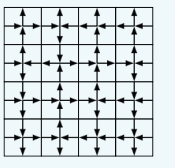

Work group on exact computations of topological entropy

Silvère Gangloff
2018-2019. Post-doctoral researcher at LIP, ENS Lyon,
working with
Nathalie Aubrun and
Michael Rao.
2015-2018. Ph.D. in Mathematics and Theoretical computer
science: Algorithmic complexity
of growth-type invariants of multidimensional SFT under
dynamical constraints, under supervision of
Mathieu Sablik.
2011-2015. ENS Paris: Studies in mathematics,
biology, and history ; Master of mathematics;
Agrégation de mathématiques.
More details:
Curiculum vitae.
Mail: first.last@gmx.com

Work group on exact computations of topological entropy
This work group aims at studying exact computations of entropies in statistical physics and provide rigorous tools in order to support
the predictions. Moreover, it aims at understanding the conditions of computability (in exact and algorithmic
sense) of entropy in multidimensions, without consideration for the physical meaning of the SFT. Thus, we
include in our consideration some examples coming from symbolic dynamics, as the Kari-Culik aperiodic shift.
It takes place in the LIP at the ENS Lyon, every other week approximately.
The next session will be the 5th of October.
Session program:
10h-11h: Exposition on the entropy of square ice [Silvère Gangloff].
Bibliography:
- Computation of entropy:
Residual entropy of square ice, E.H. Lieb.
- Technical tools:
One-Dimensional Chain of Anisotropic Spin-Spin Interactions. I.
Proof of Bethe's Hypothesis for Ground State in a Finite System, C.N. Yang, C.P. Yang.
11h- Free discussion.
October 19th: Mathematical treatment of square ice entropy [Silvère Gangloff].
Bibliography:
- Computation of weighted entropy:
Discontinuity of the phase transition for the planar random-cluster and Potts models with q>4,
H. Duminil-Copin, M. Gagnebin, M. Harel, I. Manolescu, V. Tassion.
- The Bethe ansatz:
The Bethe ansatz for the six-vertex and XXZ models: an exposition,
H. Duminil-Copin, M. Gagnebin, M. Harel, I. Manolescu, V. Tassion.
November 2nd: 14h-15h: Entropy of coverable subshifts [Guilhem Gamard].
Participants:
Nathalie Aubrun (LIP), Guilhem Gamard (LIP), Silvère Gangloff (LIP), Benjamin Hellouin (LRI),
Michaël Rao (LIP), Stéphan Thomassé (LIP), Karol Kozlowski (labo physique),
Jérémie Bouttier (labo physique), Bruno Salvy (LIP), Francesca Fiorenzi (LRI), Hugo Maturana (CMM-LIP)